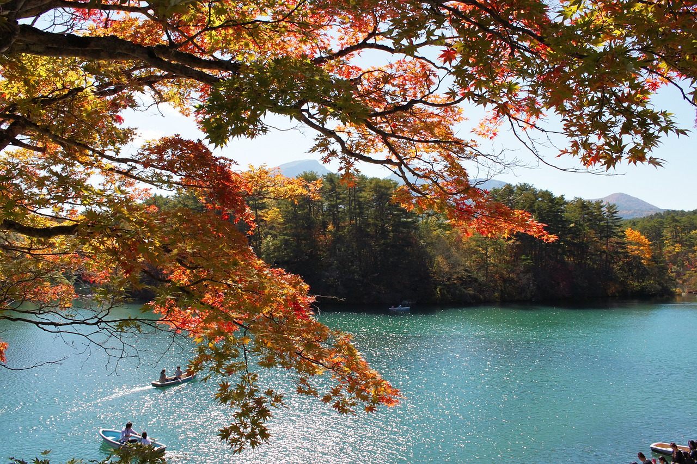

札幌時計台

札幌時計台（さっぽろとけいだい）は、北海道札幌市中央区にある歴史的な建造物です。
1878年（明治11年）に、札幌農学校（現在の北海道大学）の演武場（体育館）として建てられ、その後屋根の上に時計塔が設置されました。
鐘は毎時間、時の数だけなるため、12時に最も多くの鐘の音を聞くことができます。
1、2階が大展示室になっており、時計台の歴史や世界の鐘、過去の修復の様子について詳しく知ることができます。
住所：〒060-0001 北海道札幌市中央区北１条西２丁目
白神山地
白神山地（しらかみさんち）は、青森県と秋田県にまたがる広大な山岳地帯です。
特に世界最大級のブナの原生林が残っていることが特徴で、1993年にユネスコの世界自然遺産に登録されました。
透き通るように美しく幻想的な「青池」やダイナミックな景観を生み出す「日本キャニオン」など、人の手がほとんど加えられていない自然らしい景色を見ることができます。
ハイキングや自然観察などの目的で多くの人が訪れる人気の自然スポットです。
住所：〒036-1424 青森県中津軽郡西目屋村川原平
五色沼

五色沼（ごしきぬま）は、福島県の磐梯（ばんだい）高原にある複数の美しい湖沼の総称です。
「五色」とは様々な色を意味し、湖沼ごとに青、緑、赤など異なる美しい色合いが見られるのが特徴です。
磐梯山の噴火によって形成された大小さまざまな沼が、それぞれ異なる水質や光の反射、周囲の植物などの影響で、色が変化する。
散策路も整備されていて四季を通じて多くの観光客が訪れます。
住所：〒966-0501 福島県耶麻郡北塩原村檜原剣ケ峯